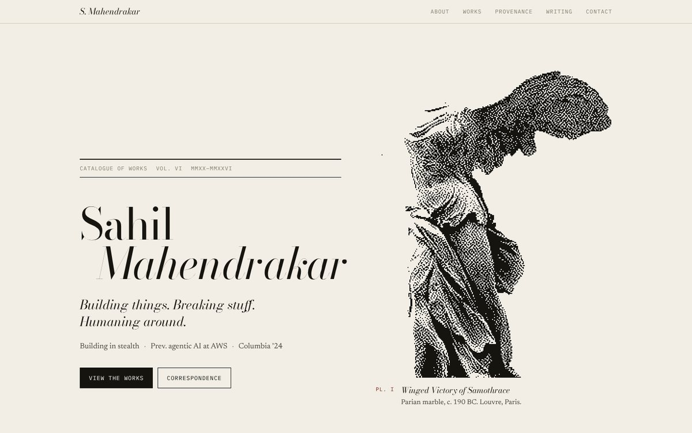
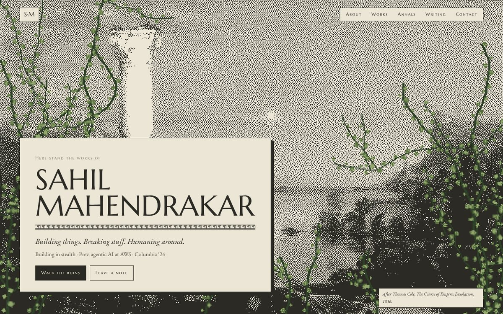
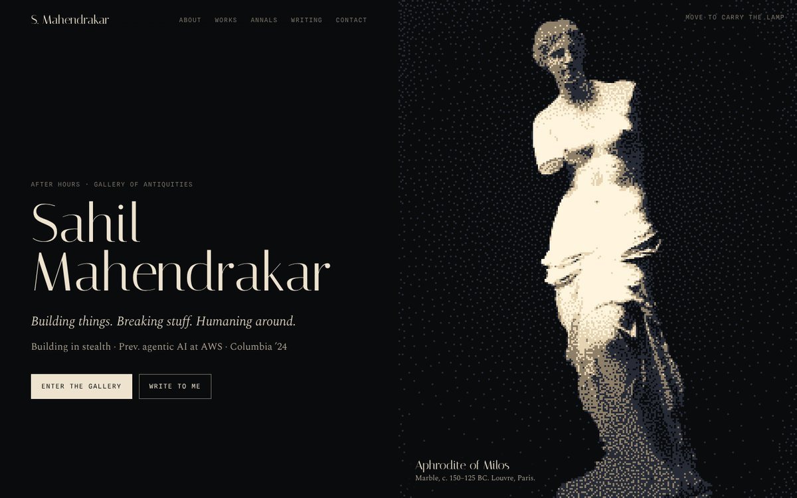
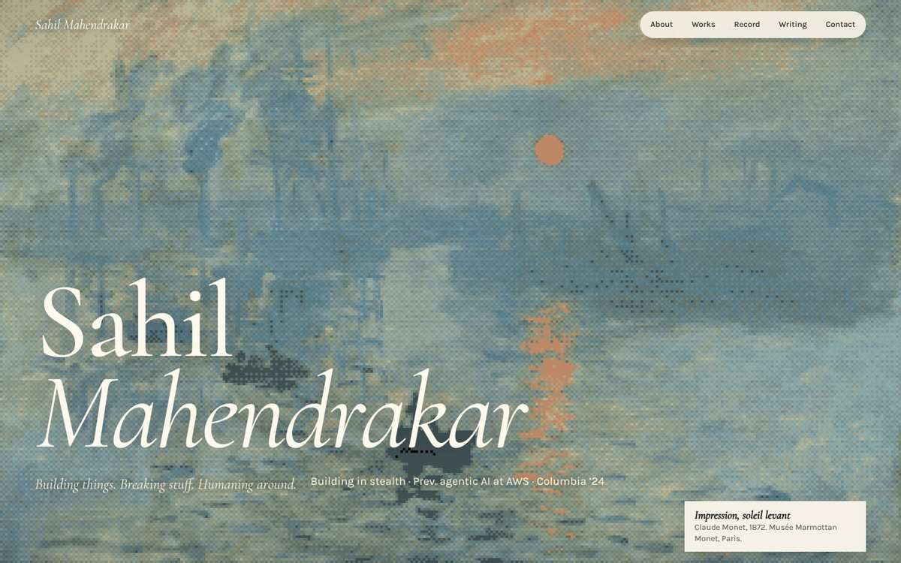
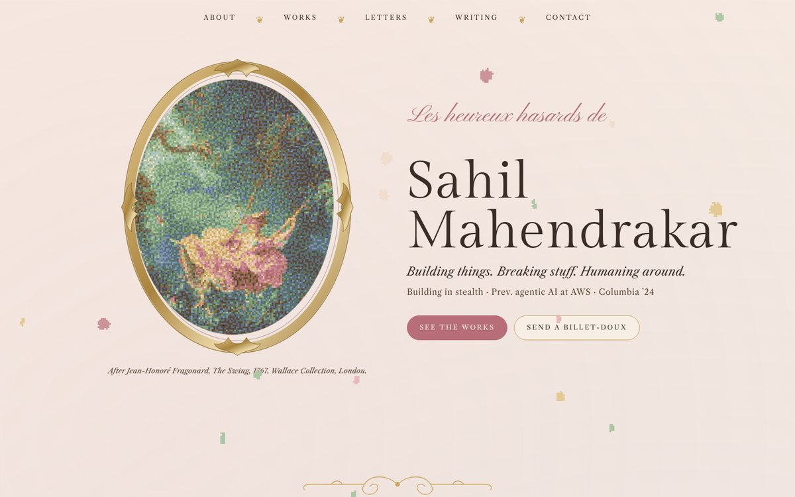
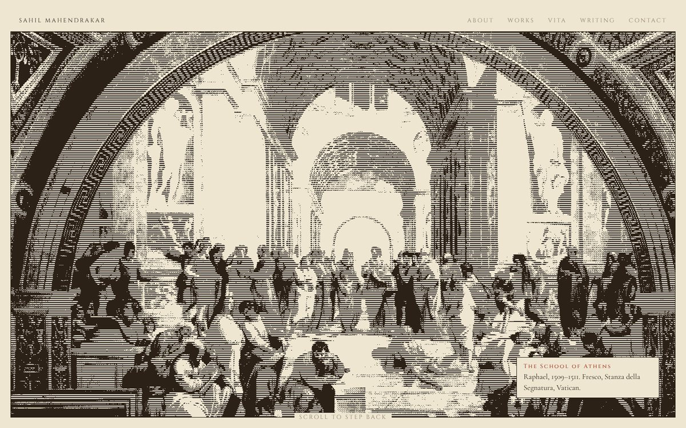

IMarble
Open →A museum catalogue of Greek sculpture, set like a printed plate book.
Atkinson diffusion. Each plate develops from coarse to fine as it enters view, and a loupe shows the original photograph under the cursor. Project images resolve into color on hover.

IIOvergrown
Open →Ancient ruins, with the page itself slowly being taken back by ivy.
Blue-noise dithered landscapes. Procedural vines grow from the edges of each section as you scroll, and never ungrow.

IIILamplight
Open →A museum after hours. Your cursor is the lamp.
Five-tone dithered ramp relit in real time. A different statue stands in the niche for each section and dissolves into the next.

IVSalon
Open →Impressionism as wallpaper. The painting changes as the day goes on.
Palette dithering with colors pulled from each canvas and a faint shimmer. Scrolling moves from sunrise to noon to the lily pond to dusk, and the project frames take on the current palette.

VFête Galante
Open →Rococo: pastel, playful, a little ridiculous in the best way.
Sixteen-color pastel palette. The swing actually sways inside its oval, and dithered petals drift down the page.

VIAcademy
Open →A famous historical painting as an engraved frontispiece.
Line-screen dither, like a banknote engraving. The page opens on Plato and Aristotle and pulls back to the whole fresco as you scroll, with notes on the philosophers.